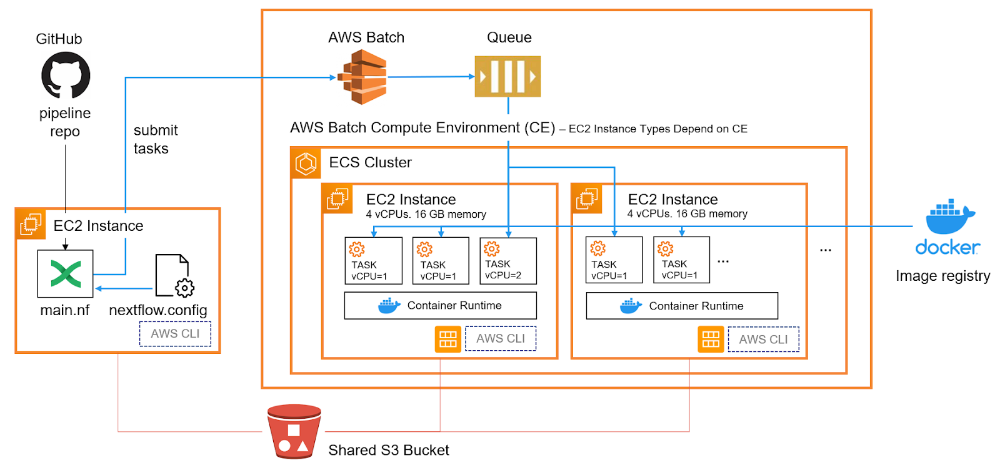

process FASTP {
publishDir s3://my_bucket/out/fastp, mode: "copy", pattern: "*{html,json}"
}Introduction
I’m migrating my Nextflow execution to AWS from HPC. AWS setup is the main challenge here. There are several great guides that I’ve referenced here and here. The problem (if there is one) is that there is no apparent way to programmatically set up AWS for Nextflow, and the web UI changes over time, which renders those guides slightly harder to follow. The irony is that this very guide I’m writing will also end up outdated, but maybe someone will find it useful in the meantime.
The referenced guides already provide great step-by-step instructions. This guide is meant to be complementary.
Main idea
 Stolen from seqera labs
A couple of tweaks:
- I’m using a local Nextflow script saved in an EC2 instance running the pipeline instead of pulling it from a Github repo
- I’m picking EC2 instances that will perform just one task per instance
Creating an IAM
- create a user group with the necessary policies
- create a user and add it to the user group
- create and download the access key
- this user’s credentials are needed by the node Nextflow is run from
Creating a role
- this role needs to be assigned to any SPOT compute environment (CE)
Creating an EC2 instance to create an AMI
- An AMI is an image from which EC2 instances (within an ECS cluster as defined by a CE) are created. A custom one with AWS CLI pre-installed needs to be created. Its ID needs to be referenced later.
Important
- should create a
t2.mediuminstance instead oft2.microor else you’d run out of memory while installing
AMI setup
sshinto the EC2 instance with.pemfile saved earlierchmod 400needs to be run to set the right kind of permissions
- I think
dockerautomatically extends its base size to include the additional 500GB EBS volume on top of the boot volume
- This EC2 instance and any associated EBS volumes should be promptly deleted after its AMI is saved
AWS batch setup
- I don’t touch job definition because this is set in the nextflow script
- Pick instance types that match the computational demands of each process
- t-neumann’s guide suggests each CE should have one type of instance to be homogeneous
- personally I grouped similar families of instances (ex. C4, C5, C5n) together to let AWS pick the optimal one
- I have one CE each for compute, memory and general purpose workloads
- t-neumann’s guide suggests each CE should have one type of instance to be homogeneous
- I’m using matching names for CE and job queue
- feels a bit redundant, but the idea is that many job queues of different priorities can be assigned to each CE
Add permission to ec2InstanceRole
Process directives
cpus, memory and time directives will define the job definition on AWS batch. Need to account for ECS overhead in these directives to ensure that tasks will actually run (more on that in “Monitoring” section below). Two additional directives relevant for execution on AWS are queue and container. queue should match the name of the job queue we created (in turn associated with a compute environment). container should point to an appropriate docker container hosted online. I used biocontainers hosted on quay.io.
I think profiles in the config file can be used to really separate the execution from workflow logic, but I don’t see myself going back to HPC or other cloud platforms.
I added pattern to publishDir directive to avoid duplicating files from work that I don’t need to save. One case in point are processed fastq.gz output files form fastp that are consumed by STAR. I only copy logs as such:
Create an EC2 instance for running Nextflow through AWS Batch
I use a t2.medium instance and install AWS CLI as before (creating an AMI). In this instance (not literally, referring to EC2), I’m running aws configure using the credentials copied/saved earlier (creating an IAM). Official instructions and security recommendations here. My Nextflow script is saved in the home directory of this instance.
Nextflow config file
This is my nextflow.config file.
Running a pipeline
Nextflow job submission to AWS Batch is not interrupted even if my ssh connection to the EC2 instance is lost.
I think the work and out sub directories should already exist in the s3 bucket.
nextflow run main.nf -w s3://{your_bucket}/work --outputDir s3://{your_bucket}/out -resumeMonitoring progress (or lack thereof)
From the AWS Batch dashboard under ‘job queue overview’, tasks should go from submitted, runnable, starting, running to succeeded. The crux is going from runnable to running. If something is not set up properly (CE, job queue, Nextflow directives), runnable jobs will never actually run. For me, only a couple of jobs would run simultaneously even when my CE was set to use beefy EC2 instances on-demand. This was due to the default EC2 quota of a few dozen vCPUs. From the root AWS account, Service Quota can be accessed and a request to increase this # can be put in (I requested 500 vCPUs and got 300 approved).
Warning
“With great power (such as increased vCPU quota), comes great responsibility.”
- the late Uncle Ben
Aftermath
Once the smoke clears and dust settles, I’m left with precious output files in my s3 bucket ready to be downloaded. I use credentials configure’d with AWS CLI on my laptop.
aws s3 cp s3://my_bucket/out . --recursive\ (•◡•) /